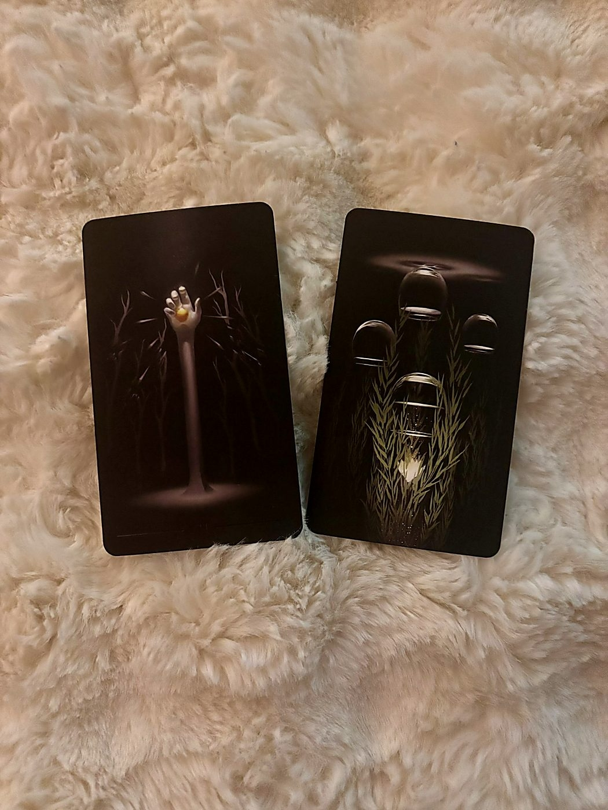
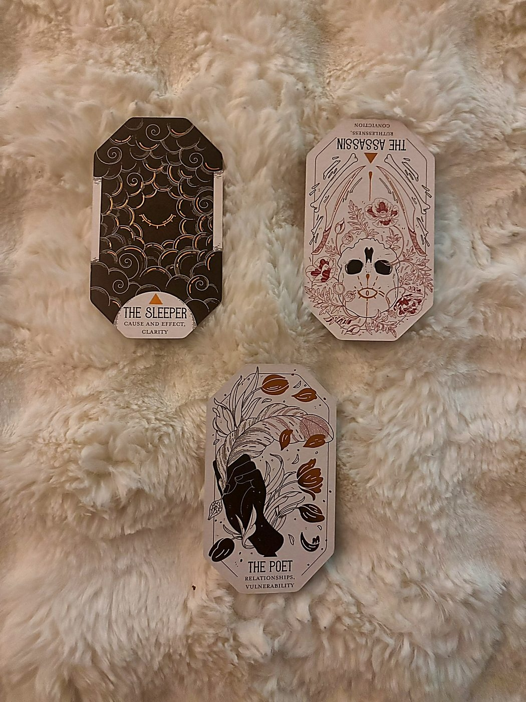
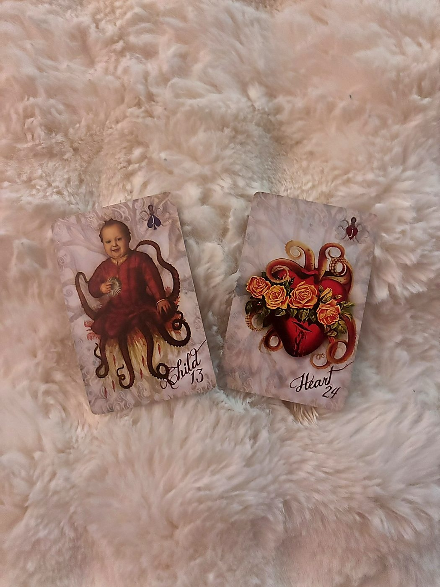
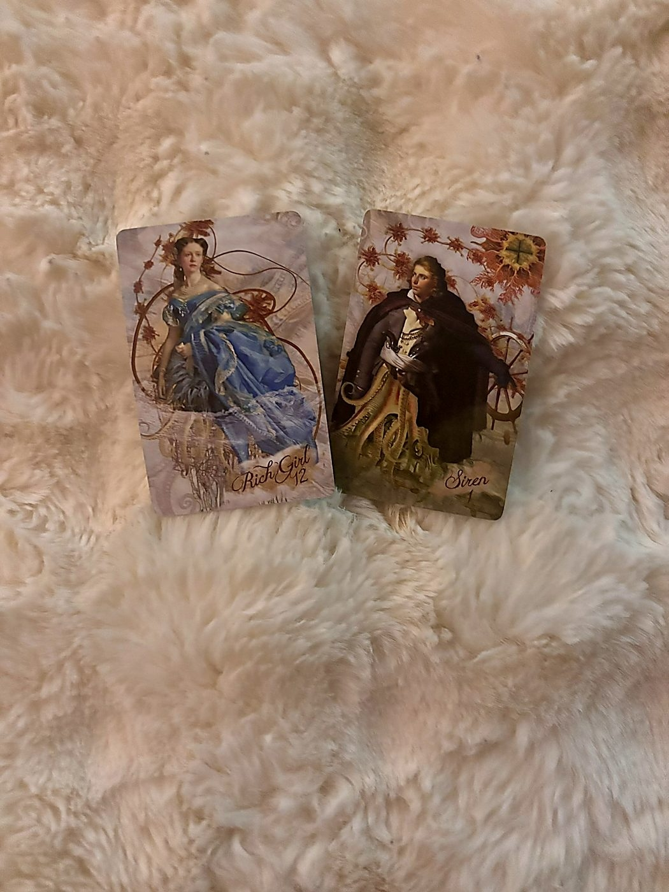
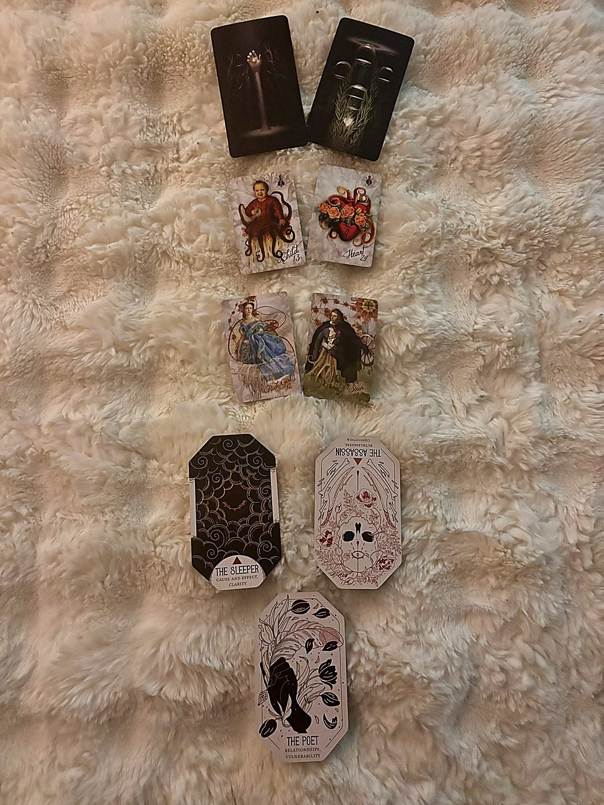

The Inner Frame
trueblack tarot · the theme & the soul lesson

You're Already on the Hill — Now Hold It
Markell, the Tarot cards I'm using are from a deck called TrueBlack. Every card is printed on deep black paper and the images emerge from the dark — it's the most visually striking deck I own, and it tends to pull toward inner, contemplative questions. Here's what yours is saying.
Your theme card for May is the Seven of Wands. In Tarot, the Seven of Wands is about standing your ground when you've already climbed to a position and now people or circumstances are pushing back. Picture someone standing at the top of a slope, staff in hand, with six more staffs jabbing up from below. You got here. But getting here wasn't the whole job — staying here is.
This tells me May is fundamentally a month of defense and assertion. Not starting something new. Not exploring. Holding a position you've already earned and refusing to be knocked off of it. The pushback might come from people who question your choices, from your own second-guessing, from logistics that make the path you've chosen feel harder than it should be. The Seven of Wands doesn't care why the challenge is happening. It says: you have the higher ground, and the only way you lose it is if you step down voluntarily.
And listen, Beyoncé's "16 Carriages" came through as your channeled song for a reason. That song is about someone who has worked relentlessly since they were young, who's given everything to a path and is now standing in the exhaustion and the triumph of it at the same time. "Sixteen carriages driving away while I watch them ride with my dreams away." The fear isn't failure — it's that everything you've built might move on without you, that the pace of the world doesn't respect what it cost you to get here. The Seven of Wands says: the carriages haven't left. You're still driving. But you need to grip the reins this month, not just hope the horses know the way.
May isn't asking you to prove yourself. It's asking you to stop apologizing for the ground you're standing on.
Look at What You've Been Waving Away
Your soul lesson card is the Four of Cups, reversed. Let me explain what this means. The Four of Cups upright shows a person sitting under a tree with three cups in front of them, arms crossed, while a fourth cup floats in the air being offered by a mysterious hand. It's the card of apathy, of "I see the options in front of me but none of them interest me." Basically, spiritual boredom or emotional shutdown — you're so checked out that you can't even register what's being handed to you.
Now, "reversed" in Tarot means the card was drawn upside down, which shifts its energy. In this case, the reversal means you're waking up from that apathy. You're starting to turn your head and actually look at the cup that's been floating there. Something you've been dismissing, ignoring, or refusing to feel is now asking for your attention, and the growth edge this month is in letting it land.
Here's the real talk, Markell. The Seven of Wands as your theme says you're in fighter mode, defending your position. And that fighter stance is valid. But the Four of Cups reversed says the inner work is about noticing what your defensive posture has made you blind to. When you're holding a staff and bracing for impact, your peripheral vision narrows. Something good, something emotionally real, something that wants to reach you has been hovering at the edge of your awareness, and you've been too busy holding the line to look at it.
The soul lesson isn't "drop your guard." It's "defend your ground and stay soft enough to receive what's trying to reach you." Those two things are not in conflict. You can hold a boundary with one hand and accept a gift with the other.
The spiritual assignment for May: stop confusing alertness with closure. You can be watchful without being shut down.
The Oracle Frame
citadel oracle · what's emerging, the warning & spirit's addition

The Permission to Go Quiet
Not all sleep is rest, and not all rest is sleep. The Sleeper drifts through the Citadel's quieter hours in a state between knowing and not-knowing -- sometimes recovering genuine energy, sometimes simply avoiding the waking world. This card asks which kind of sleep is happening: the necessary rest before a new effort, or the unconscious avoidance of a confrontation that cannot be indefinitely deferred.
UPRIGHT: Genuine rest is needed and you should not feel guilty for taking it. The body and mind need time to process, recover, and integrate before the next effort. What feels like inaction is actually preparation. Trust the rest.
— The Citadel Oracle
The Sleeper, upright, is emerging into your month. The Citadel Oracle is a deck of archetypes — characters you might find in a strange, walled city — and each one represents an energy that's active in your life. The Sleeper is exactly what it sounds like: a figure in the space between wakefulness and dreaming. Upright, it means the rest is real and earned, not avoidance.
Now, this might feel like it contradicts the Seven of Wands — that card said "hold your ground, stay sharp, defend." And now The Sleeper walks in and says "rest is entering your life." But listen carefully: what's emerging is not always what's happening on the surface. This card sits in the position of something new entering your awareness. What's new isn't that you're tired — you already know you're tired. What's new is the possibility of letting yourself actually rest without treating it like failure.
Think about it like this: a soldier on a hill can rotate shifts. You don't have to be in battle stance every waking hour to hold the position. The Sleeper emerging in May says that some part of you is ready to integrate everything that's happened recently — to let the body and the psyche catch up with where life has moved. The New Moon in Taurus on May 16th is speaking directly to this: Taurus energy is about the body, about comfort, about planting your feet on solid earth and saying "I'm allowed to feel good here." That's The Sleeper's invitation. Preparation that looks like stillness.
What's emerging isn't laziness. It's your system finally asking for the processing time it's been denied.
The Blade That Doesn't Know When to Stop
Silent footfalls, a cloak pulled close, a task assigned and accepted without sentiment. The Assassin of the Citadel acts where others hesitate -- not out of cruelty, but out of an absolute clarity of purpose. They know that some problems do not respond to diplomacy, and that delayed action often costs more than swift, decisive action ever would.
REVERSED: You have gone too far -- cut too many ties, burned too many bridges, acted without considering the collateral damage. Ruthlessness has become its own problem. The work now is to rebuild, not to cut further.
— The Citadel Oracle
The Assassin, reversed. In the Citadel Oracle, when a card falls reversed — upside down — it doesn't mean the opposite of the card. It means the shadow side or the excess of that energy. So the Assassin upright is someone with precise, clean decisiveness. Reversed? The cutting has gone too far.
Markell, this is the warning position. This is what could go sideways in May if you're not watching for it. And it's a direct shadow of the Seven of Wands energy. Here's the risk: you're in defensive mode, you're holding your ground, and somewhere in that process, the line between "protecting yourself" and "cutting people out preemptively" blurs. You might find yourself ending conversations too quickly, shutting down offers of help, pushing away people who are actually on your side because your nervous system has decided that anything incoming is a threat.
The reversed Assassin says: the collateral damage is real. If you've already been in a season of cutting ties, setting hard boundaries, or walking away from situations, this card is asking you to pause and take inventory. Has every cut been necessary? Has every bridge you burned actually needed to go? Or did some of them get torched because it was easier to eliminate than to negotiate?
This isn't punishing you. It's pointing at something that's worth your attention. The Assassin reversed doesn't say you were wrong to protect yourself. It says the tool that served you — sharp, fast, decisive action — can become the problem if it's the only tool you reach for. May is asking you to rebuild some of what's been cut, or at minimum, to stop cutting for now.
The warning: don't let your survival instinct convince you that every open hand is a threat.
The Card That Showed Up Uninvited
This card was not pulled for any position. It fell out of the Oracle deck on its own during the reading — which, in my practice, I treat as a message that insisted on being heard. It doesn't belong to the structure of the spread. It belongs to whatever needed saying that the spread didn't already cover.
The Poet wanders the corridors of the Citadel with eyes that see past the official version of events. They notice the grief behind the smile, the beauty in the broken window, the injustice in the celebration. Their gift is articulation -- the capacity to name what others feel but cannot say. This is not a passive gift. Truth-telling, in the Citadel, has always been a form of courage.
UPRIGHT: Pay close attention to what you are observing around you -- your sensitivity is a data source, not a weakness. The true picture of this situation is available to you if you are willing to see past the surface version. And if there is something true that needs saying, this is the moment to say it.
— The Citadel Oracle
The Poet, upright. And Markell, this card falling out on its own is significant because it directly speaks to something the rest of the reading is circling around but hasn't named plainly: you see more than you let on.
The Poet is the archetype of someone who perceives what others miss — the real emotion underneath the performance, the truth behind the polished surface. Upright, it says your sensitivity isn't making you fragile; it's making you accurate. You are reading people and situations correctly. The instinct that tells you something's off? It's not paranoia. The feeling that a certain dynamic doesn't match the words being used? You're right.
But here's why this card jumped out of the deck: The Poet's gift isn't just seeing — it's saying. This card arrived to tell you that May contains a moment where something true needs to be spoken aloud. Not in anger, not as a weapon, but as an act of courage. You've been observing, collecting data, noting the discrepancies. At some point this month, the observation needs to become articulation. The Poet doesn't hoard their truth. They give it voice.
And notice how this connects to the Assassin reversed in your warning position. The Assassin cuts silently, without words. The Poet speaks. Spirit is essentially saying: don't just cut people off — tell them why first. The alternative to silent severance is honest speech. That's the uninvited message.
You already see it. The assignment isn't to see more clearly. It's to say what you see out loud.
The External Terrain
sirens' song lenormand · what's releasing & the invitation

The End of Playing Small
Lenormand is a card system that works differently from Tarot. There are no reversed cards, and each card has a tight, specific meaning — more like a word than a story. I read them left to right, and the position in the spread matters: whatever's closest to you is most immediate.
What's releasing for you in May is the Child (13). In Lenormand, the Child represents new beginnings, but it also represents innocence, smallness, inexperience, and naivety. When it falls in the "releasing" position, it means you're outgrowing something. An identity, a dynamic, a version of yourself that was defined by being new at something, or small in some arena, or not-yet-ready.
Markell, this is the version of you that enters a room already assuming you're the least experienced person there. It's the part that hedges before speaking, that qualifies every opinion with "I might be wrong, but—" It's the dynamic where someone treats you like you're still learning something you've actually already learned. May is completing that cycle. The "new kid" energy is being shed.
This connects powerfully to the Seven of Wands. You can't hold the high ground while still identifying as the person who just arrived at base camp. The Child releasing means the external reality is catching up to an internal shift that's probably already happened — you've been ready to claim a more authoritative version of yourself, and May is when the old "small" identity finally drops away for good.
You're not new here anymore. May is the month the world catches up to that fact.
Love Is Trying to Get Through
The Heart (24). The Heart in Lenormand is exactly what you'd think — love, emotion, desire, generosity, romantic feeling. It's one of the most purely positive cards in the deck. When it falls in the invitation position, the universe is extending something warm and emotionally real toward you this month.
Now, here's what makes this land so hard: remember the Four of Cups reversed in your soul lesson? That card said you've been turning away from something emotionally offered. And here's the Heart, sitting right in the "gift of the month" position, saying this is what you've been turning away from. The invitation is emotional openness. Love, connection, genuine warmth — whether romantic, platonic, or self-directed. It's available. It's being offered. The only question is whether you'll receive it.
In Lenormand, position matters, and the Heart sitting in the invitation position — the last Lenormand card in this spread — carries the most weight in the chain. That's a structural emphasis: this isn't a footnote, it's the headline. The external terrain of May is defined by something leaving (the Child, the smallness) and something arriving (the Heart, something real and warm). The releasing makes room for the receiving.
The mid-month planetary shifts support this. Venus moves into Cancer around May 17th, which is Venus in her most nurturing, emotionally available form — she wants to feed you, hold you, make sure you're loved. The Heart card and Venus in Cancer are singing the same note.
The gift of May is simple and enormous: let yourself be loved. That's the invitation. Take it.
The Hidden & The Closing
sirens' song kipper · the undercurrent & the blue moon message

The Woman Who Has More Than She Claims
Kipper cards are a German divination system, and unlike Tarot, many of them depict specific types of people rather than abstract concepts. The direction the figure faces on the card matters — it tells you where their attention is pointed, who they're looking at, what they're engaged with. This is important for how I read what's happening beneath the surface.
Your hidden current card is Rich Girl (12). In Kipper, the Rich Girl represents a young woman of wealth, status, or privilege — or the energy of affluence and abundance that someone carries. She faces right in the Siren's Song deck, which in a Kipper reading means she's looking forward, toward what's coming, oriented toward the future.
As the hidden current beneath May's visible events, the Rich Girl tells me something interesting: there's more abundance and resource available to you than what's visible on the surface. This might be literal — money, assets, or support you haven't fully accounted for. Or it might be energetic — you carry more weight, influence, and capital (social, professional, creative) than you're currently operating from. The Rich Girl is hidden, which means you're not performing this abundance. You might not even fully recognize it.
This is the undercurrent feeding your Seven of Wands stance. You're defending the hilltop, and underneath your feet — whether you've looked down to check or not — the ground is richer than you think. The Rich Girl as a person card could also represent a specific young woman in your life who has resources or connections that will become relevant this month. She's operating in the background for now, but her energy is part of your story whether she's visible yet or not.
The Full Moon in Scorpio on May 1st — which literally just happened as this reading was pulled — is the kind of lunation that digs up what's buried. Scorpio finds the hidden treasure and drags it into the light. The Rich Girl sitting in the hidden current position during a Scorpio full moon? That's buried abundance surfacing. Pay attention to what you discover about your own resources this month.
Beneath the fight, beneath the exhaustion, you're standing on more than you realize. The hidden current of May is abundance that hasn't been claimed yet.
You, Standing in Your Own Name
The Blue Moon Message is how May closes — the note this month ends on, the energy you'll carry into June. A Blue Moon is a rare second full moon in a single month, and this one lands in Sagittarius on May 31st. Sagittarius energy is about the bigger picture, expansion, seeing beyond the immediate struggle to the horizon. So whatever card falls here has extra amplification: it's not just an ending, it's an opening into something larger.
Your closing card is Siren 1 — which is the Main Man card in this Kipper deck. In Kipper readings, the Main Man is the primary male significator, the central figure the whole reading organizes around. In the Siren's Song deck specifically, Siren 1 is me — the reader's card, Jaylon's card. But when it falls in a reading for someone else, it doesn't mean "the reader shows up at the end." It means the full weight of the primary significator energy lands on the querent.
Markell, here's what this means in plain language: May ends with you fully claiming the main character position in your own story. Not as a supporting player, not as someone reacting to other people's decisions, not as the new kid, not as the defender on the hill. As the central figure. Siren 1 faces left in this deck, which means he's looking back — back at everything that happened during the month, back at the growth, back at what was released and what was received. By May 31st, you'll be in a position to look back at this month and see it as a turning point.
The Blue Moon in Sagittarius amplifies this with its energy of philosophical expansion. You won't just feel different. You'll understand why you're different. The carriages from "16 Carriages" — by the end of May, you'll know which ones you're driving and which ones you let go on purpose.
May closes with you stepping fully into the center of your own life. Not earning the right to be there. Already there.
✦ The Full Picture
synthesis · all decks woven · may 2026

Sixteen Carriages, One Driver
Here's the whole story of your May, Markell, pulled together from every card across every deck.
You start the month already standing on a hill you've earned, and the Seven of Wands says the primary work of May is holding that position — not apologetically, not with one foot already backing down the slope, but with full conviction that you belong there. The pressure is real. People, circumstances, maybe your own doubt, are pushing upward. You hold anyway.
But you're not just fighting all month. The Sleeper is emerging, which means genuine rest — not collapse, not avoidance — is becoming available in a way it hasn't been before. You've been running on "16 Carriages" energy for a long time: working since you were young, giving everything to the path, watching pieces of yourself get loaded up and driven away. The Sleeper says you can rotate off the watchtower for a few hours. The battle doesn't end when you sleep. Your body just finally catches up to your spirit.
Meanwhile, beneath the surface, Rich Girl is doing her quiet work. There's hidden abundance — financial, social, creative, relational — that you haven't fully recognized or claimed. The Scorpio Full Moon that opened this month is designed to unearth exactly this kind of buried treasure. Let it surface. When you find yourself saying "I didn't realize I had that" or "I forgot I could do that" or "I didn't know they were willing to help" — that's the Rich Girl card being activated.
What's leaving is the Child: the identity of smallness, newness, not-yet-ready. This is the version of you that still introduces herself with a qualifier instead of a period. She's done. Not because you've rejected her, but because you've simply outgrown her, the way you outgrow shoes — it's not personal, it's just physics. You need more room now than that identity can provide.
The soul lesson, the Four of Cups reversed, is the hinge of the whole reading. It says: in the middle of all this defending and standing and asserting, you've been emotionally closed. Not maliciously. You've been in survival mode, and survival mode narrows the aperture. Something has been offered — emotionally, relationally — and you've been staring at the ground instead of at the hand extending toward you. May is when you finally look up. The Heart in the invitation position confirms this isn't hypothetical. Love, warmth, genuine connection is being offered to you this month. It's the loudest card in the Lenormand chain. Take it.
But the Assassin reversed warns that your defensive instinct — sharp, fast, decisive — has a shadow. You've been cutting. Maybe some of it was necessary. But the reversed Assassin says the blade has been swinging past the point of usefulness, and some of the bridges you've burned might have been roads you still needed. This doesn't mean your boundaries were wrong. It means the method needs refinement. You can protect yourself without scorched earth.
And that's where The Poet fell out of the deck uninvited to deliver the missing piece. The Poet says: the alternative to silent cutting is honest speaking. You see the truth of situations. You read people accurately. Your sensitivity is not a liability, it is intelligence. But the intelligence is only useful if it becomes language. The thing you need to say — to someone, about something — is available to you. May is the month to say it. Not with a blade. With your voice.
And then May closes, under a rare Blue Moon in Sagittarius, with Siren 1 — the Main Man, the primary significator, the central figure of the whole reading — landing in your final position. You end this month standing in the center of your own story. Not fighting for the right to be there anymore. Just there. Looking back at the month with Sagittarian clarity, understanding the arc: you defended your position, you rested when you needed to, you shed an outdated smallness, you let love in, you spoke a truth that needed speaking, and you stopped confusing protection with isolation.
Pluto stations retrograde in Aquarius on May 6th, and that transit is about reassessing where your power lives — not the power other people grant you, but the power that's yours regardless. Every card in this spread is pointing at the same thing from a different angle: you already have what you need. The hill is yours. The abundance is underneath you. The love is in front of you. The voice is inside you. May doesn't give you anything new. It gives you permission to finally use what's been yours all along.
Sixteen carriages, Markell. You've been watching them. This month, you stop watching and start driving. One set of reins. Your hands. The road ahead.